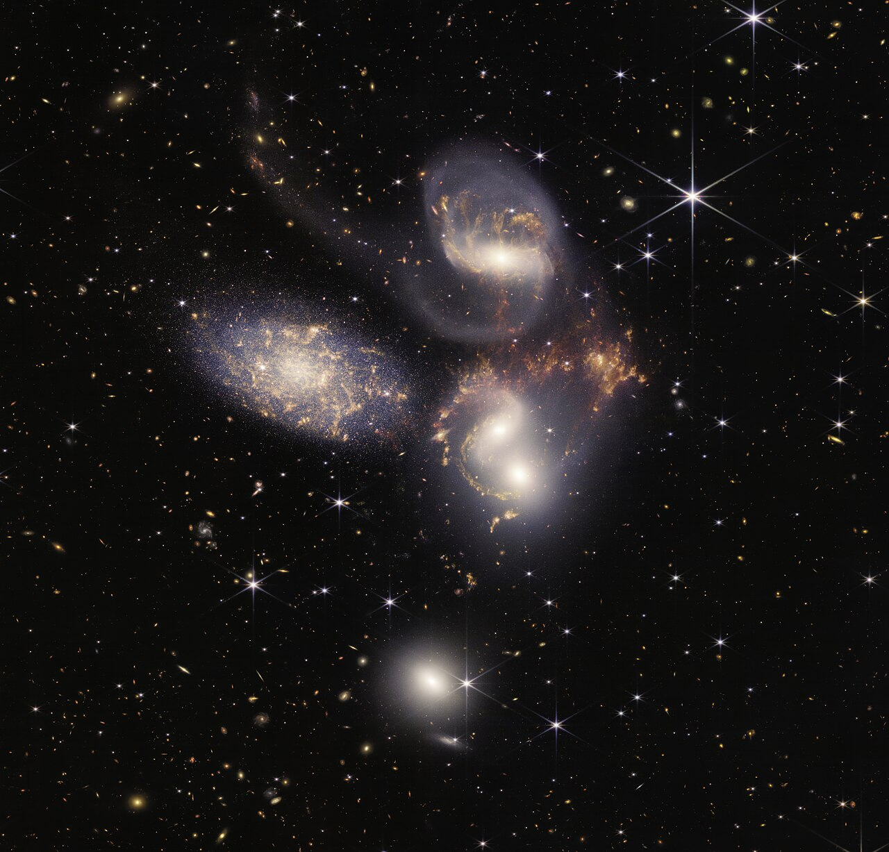
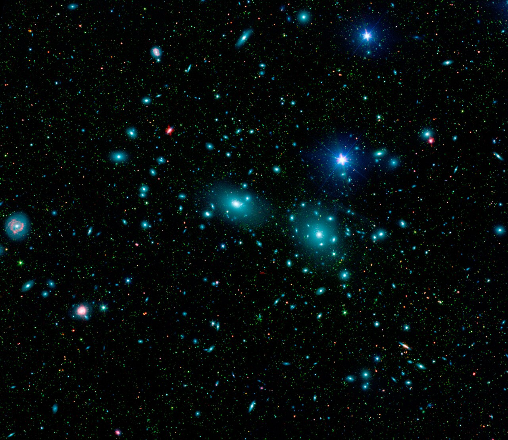
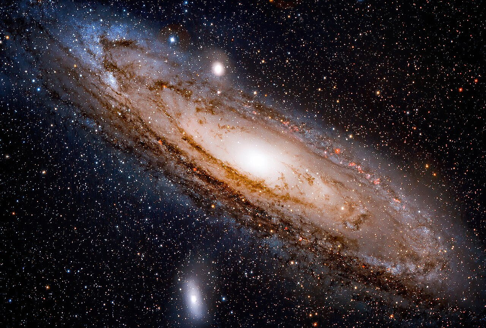
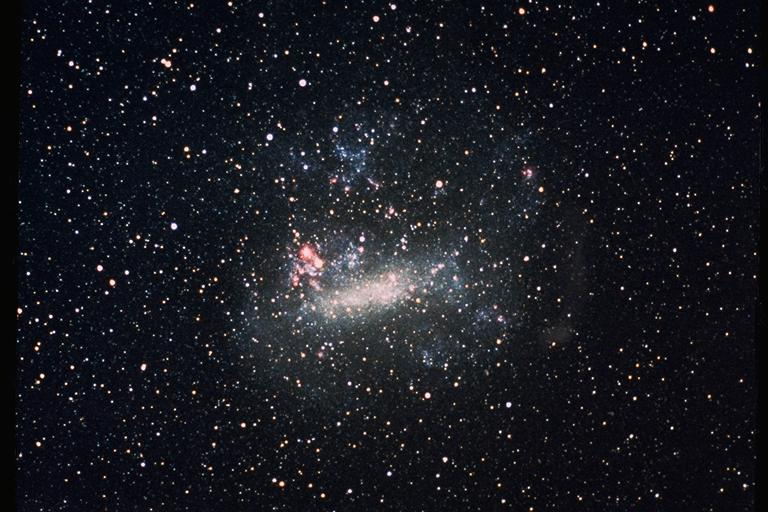

동기 유발
우리의 우주 주소는?
교과서 p. 101학습 목표
- 은하의 공간 분포 자료를 통해 은하의 집단을 구분할 수 있다.
- 은하 장성, 거대 공동 등 우주의 거시적인 구조를 설명할 수 있다.
지름 약 1.3만 km지구대한민국 ○○시
→
태양권 약 120 AU태양계
→
약 30 kpc우리은하
→
약 3 Mpc국부 은하군
→
약 30 Mpc처녀자리 초은하단
→
약 160 Mpc라니아케아 초은하단
→
약 28 Gpc관측 가능한 우주

NASA, ESA, CSA, STScI

NASA/JPL-Caltech/GSFC/SDSS
편지 봉투에 '우주 주소'를 쓴다면 어떻게 써야 할까?
은하는 혼자 있을까, 무리를 지어 있을까? 그 무리는 또 어떤 더 큰 구조를 이룰까?
은하는 혼자 있을까, 무리를 지어 있을까? 그 무리는 또 어떤 더 큰 구조를 이룰까?
우주 주소 쓰기 활동으로 규모(크기 단위)를 먼저 정리하게 하면 은하군 → 은하단 → 초은하단 → 우주거대구조의 위계가 자연스럽게 잡힙니다. 운영안 3차시.
핵심 개념 1
은하의 집단
교과서 p. 101 ~ 102(1) 크기에 따른 은하 집단의 분류
| 구분 | 은하 수 | 크기 | 특징·예 |
|---|---|---|---|
| 은하군 | 수 개 ~ 수십 개 | 약 1 ~ 3 Mpc | 중력으로 묶인 가장 작은 집단. 국부 은하군, 스테판 오중주 |
| 은하단 | 수백 ~ 수천 개 | 약 2 ~ 10 Mpc | 중심에 거대 타원 은하, 은하 사이를 채운 뜨거운 기체(X선). 처녀자리·머리털자리 은하단 |
| 초은하단 | 은하군·은하단 수십 개 | 약 30 ~ 150 Mpc 이상 | 중력으로 완전히 묶여 있지는 않다. 처녀자리 초은하단, 라니아케아 |
- 국부 은하군: 우리은하와 안드로메다은하(M31)가 가장 크고, 삼각형자리은하(M33), 대·소마젤란은하 등 50개 이상의 왜소 은하가 두 큰 은하 주위에 모여 있다.
- 안드로메다은하는 초속 약 110 km로 다가오고 있어 약 40억 ~ 50억 년 뒤 우리은하와 충돌·병합할 것으로 예상된다.

David (Deddy) Dayag, CC BY-SA 4.0

NASA/Ames, 퍼블릭 도메인
(2) 국부 은하군 3D 지도 (실제 거리 자료)
시뮬레이션 1국부 은하군 돌려 보기
마우스로 끌어 돌려 보자. 은하 위에 올리면 정보가 보인다.
은하 좌표(은경·은위)와 거리로 계산한 실제 3차원 배치이다. 점 크기는 은하의 대략적인 밝기를 나타낸다. 왜소 은하들이 우리은하와 안드로메다 두 '중심' 주위에 모여 있는지 확인하자.
핵심 개념 2
우주거대구조와 그 형성
교과서 p. 103 ~ 104(1) 우주 그물(코스믹 웹)
- 우주거대구조: 은하와 은하 집단이 이루는 수억 광년 규모의 그물 모양 구조
- 필라멘트·은하 장성: 은하들이 실이나 벽처럼 길게 늘어선 구조 (CfA 장성 약 5억 광년, 슬로운 장성 약 14억 광년)
- 거대 공동(보이드): 그물 사이 은하가 거의 없는 거대한 빈 공간 (지름 수천만 ~ 수억 광년)
- 필라멘트가 만나는 교차점에 은하단이 자리한다.
- 아주 큰 규모(수억 pc 이상)에서 보면 우주는 대체로 균질·등방하다(우주론의 원리).
(2) 거대 구조는 어떻게 생겼을까?
- 초기 우주의 물질은 거의 균일했지만 아주 작은 밀도 차이(약 10만분의 1)가 있었다. 그 흔적이 우주 배경 복사의 미세한 온도 차이로 관측된다.
- 밀도가 조금 높은 곳은 중력으로 주변 물질을 끌어당겨 더 높아지고, 낮은 곳은 더 비어 간다 → 필라멘트와 공동
- 보통 물질보다 약 5배 많은 암흑 물질이 먼저 뭉쳐 '뼈대'를 만들고, 보통 물질이 그 안으로 모여 은하가 되었다.
- 슈퍼컴퓨터 시뮬레이션(밀레니엄 시뮬레이션, 일루스트리스 등)으로 만든 우주는 관측된 우주거대구조와 매우 비슷하다.
시뮬레이션 2중력으로 거대 구조 만들기 (2차원 N체 모형)
입자 900개가 서로 중력으로 끌어당긴다(가장자리는 반대편과 이어진 주기 경계). 처음에는 거의 고르게 퍼져 있지만 시간이 지나면 덩어리와 실 모양 구조가 생긴다. 요동을 0으로 하거나 암흑 물질을 빼면 어떻게 되는지 비교하자.
데이터 탐구
프렌즈-오브-프렌즈(FoF) 알고리즘으로 은하군·은하단 찾기
탐구 개요
천문학자들은 수백만 개 은하 목록에서 은하군·은하단을 컴퓨터로 찾는다. 가장 널리 쓰는 방법이 프렌즈-오브-프렌즈(FoF)이다. 규칙은 단 하나: 연결 거리 b보다 가까운 두 은하는 '친구'이고, 친구의 친구도 같은 무리이다. 모의 은하 지도에 이 알고리즘을 직접 돌려, b에 따라 결과가 어떻게 달라지는지 탐구한다.
규칙 이해연결 거리 b를 정하고 '실행'을 누르면 같은 무리끼리 같은 색으로 칠해진다. 은하 3개 이상이 모인 것만 '집단'으로 센다.
분류구성 은하 수로 은하군(3 ~ 49개)과 은하단(50개 이상)을 나눈다.
민감도 분석b를 작게·크게 바꾸며 집단 수와 가장 큰 집단의 크기가 어떻게 변하는지 그래프로 본다. 너무 크면 무슨 일이 생기는가?
다중도 함수집단 크기별 개수를 로그 눈금 히스토그램으로 그린다. 작은 집단과 큰 집단 중 어느 것이 많은가?
데이터 랩FoF 군집 찾기 · 모의 은하 지도 (200 Mpc × 200 Mpc 조각)
회색 점: 어느 집단에도 속하지 않은 은하(외톨이). 큰 원: 은하단(50개 이상). 실제 연구에서는 평균 은하 간격의 약 0.2배를 b로 쓴다(이 지도에서는 약 1.5 Mpc).
분석 질문
1. b = 1.5 Mpc일 때 찾은 은하군과 은하단의 수는? 은하단은 지도의 어디에 있는가?
은하군 약 200개(대부분 은하 3 ~ 5개의 작은 집단), 은하단 7개 정도가 찾아진다. 은하단은 필라멘트가 여러 갈래로 만나는 교차점에 있고, 은하군은 필라멘트를 따라 늘어서 있다. 거대 공동 안에는 집단이 거의 없다.
2. b를 아주 크게(5 Mpc 이상) 하면 어떤 일이 생기는가? 알고리즘의 결과를 믿으려면 무엇을 확인해야 할까?
필라멘트 전체가 사슬처럼 이어져 하나의 거대한 '집단'이 된다(과잉 연결). 반대로 너무 작으면 실제 은하단도 여러 조각으로 쪼개진다. 결과가 매개변수에 민감하므로 여러 b로 결과가 안정적인지 확인하고, 모의 자료(정답을 아는 자료)로 알고리즘을 시험해 b를 고른다.
3. 다중도 함수에서 어떤 경향이 보이는가? 이것이 우주의 구조 형성에 대해 말해 주는 것은?
작은 집단(은하 3 ~ 10개)이 가장 많고 큰 은하단일수록 급격히 드물다. 작은 구조가 먼저 만들어지고 이들이 합쳐져 큰 구조가 된다는 '상향식(계층적) 구조 형성'과 들어맞는다.
형성 평가
개념 확인 문제
그림·자료 출처
사진: NASA, ESA, CSA, STScI, NASA/JPL-Caltech, Wikimedia Commons. 국부 은하군 자료: McConnachie(2012) 목록 등의 은경·은위·거리를 반올림한 값. FoF 탐구의 은하 지도는 교육용 모의 자료입니다. 시뮬레이션은 직접 만들었습니다.